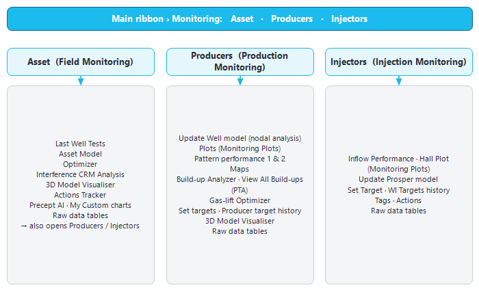

|
|
Monitoring module (production surveillance)
1. Overview — what the Monitoring module does
Precept has two modules. The Forecast module builds scenarios and predicts future production. The Monitoring module looks at what the field and each well are doing now, and compares it with what they should be doing. It answers day-to-day surveillance questions:
•How much did the field produce and inject yesterday, this week, this month and this year?
•Which wells are down, which are partly down, and how much production was lost (the shortfalls)?
•Which wells produce more or less than the forecast of a chosen scenario?
•Are the wells running at their targets (THP, BHP, gas-lift, injection rate)?
•Do the well tests, the pressures and the well models still agree with each other?
•Which injectors support which producers, and what does a build-up say about reservoir pressure?
The Monitoring module reads the asset's measured data. It does not change a forecast scenario, except where a dashboard explicitly saves something (a well status, a target, a reservoir pressure, a build-up analysis).
2. Where to find it
The Monitoring module is enabled per asset (licence). When it is enabled, the main ribbon shows a group named "Monitoring" with three buttons:
|
Button
|
Opens
|
Use it to
|
|
"Asset"
|
The "Field Monitoring <asset>" window (Asset dashboard).
|
See the whole field on one screen: production and injection KPIs, shortfalls, efficiency, a well-by-well timeline, over / under-performing wells, targets. Entry point to the field-wide tools (CRM, Optimizer, Last Well Tests, Precept AI, Action Tracker).
|
|
"Producers"
|
The "Production Monitoring <asset>" window (Producers dashboard).
|
Look at one oil or gas producer in detail: daily parameters, allocated rates, well tests, forecast, well-model charts, build-ups, gas-lift, targets.
|
|
"Injectors"
|
The "Injection Monitoring <asset>" window (Injectors dashboard).
|
Look at one water injector, gas injector or WAG well in detail: injection rate, THP, BHP, Hall plot, injection targets.
|
The "Producers" and "Injectors" dashboards can also be opened from:
•the "Monitoring" group of the Decline Curves window (when Monitoring is enabled for the asset);
•the ribbon of the Asset dashboard. The "Injectors" button there appears only when the asset has allocated water injection.
Each click opens a new window, maximised. You can keep several dashboards open side by side (for example the Asset dashboard and two Producers windows).

Figure 1 — How the Monitoring windows connect. The three ribbon buttons open the three dashboards; each dashboard opens its own tools.
3. Data used by the Monitoring module
The dashboards read the measured data stored for the asset. Most of it is loaded with "Import Asset data" on the Asset dashboard ribbon, or comes from the site's production-allocation system when Precept is connected to it (see Data sources and asset configuration).
|
Data
|
What it contains
|
Used for
|
|
Daily production allocation
|
Per well and per day: oil, gas, water, water injection, gas injection, plus uptime (fraction of the day the well produced) and a downtime reason.
|
Field KPIs, production charts, shortfalls, efficiency, over / under performance, CRM, PTA rates.
|
|
Daily well parameters
|
Producers: THP, THT, FP (flowline pressure), BHP, BHT, gas-lift rate, CHP (casing pressure), choke, and for ESP wells PDP (pump discharge pressure), drive frequency and motor current. Injectors: THP, BHP, injection rate, choke, FP.
|
Main charts of the Producers and Injectors dashboards, Actual vs Target, build-ups, CRM (producer BHP).
|
|
Well tests
|
Test date, oil, water, gas, liquid, BSW, GOR, choke, gas-lift, pressures.
|
Test points on the charts, "Last Well Test" box, Last Well Tests window, well-model calibration, optimizers.
|
|
Reservoir pressures
|
Reservoir pressure at datum per well and date (surveys, or values saved from the Build-up Analyzer).
|
"Reservoir pressure" points on the well charts; Material Balance history matching.
|
|
Forecast scenario
|
The deterministic forecast of a scenario chosen in the dashboard (by default the most recently modified one).
|
Over / Under Performing Wells, forecast lines on the well charts.
|
|
Targets
|
Operating set-points per well (THP, BHP, gas-lift, injection rate), with their history.
|
Actual vs Target chart, target lines, exception-based surveillance.
|
|
Asset model (monitoring)
|
The list of wells with their type, status, reservoir, location, rank, X / Y coordinates and optional potential overrides. Open it with "Asset Model" on the Asset dashboard.
|
Well lists and filters of every dashboard, the CRM map.
|
|
High-frequency (historian) data
|
Minute-level well parameters from the site process historian. Only for assets with real-time monitoring enabled.
|
"High Frequency" view of the well charts, hourly timeline, build-ups, exception-based surveillance (section 5).
|
|
Well-model results
|
VLP / IPR, BHP from THP, performance curves and other KPIs calculated from the well models.
|
Right-hand charts of the Producers dashboard, optimizers. See Nodal analysis and well models.
|
Units follow the asset's unit system (oilfield or metric). All pressures are gauge.
The dashboards' time axis ends on the asset's latest allocated date, not on today's date. A field whose data stopped some time ago therefore still opens on its last data.
4. Working with the charts
All Monitoring charts share the same mouse gestures:
•Zoom — drag a rectangle with the left mouse button. A "⟲ Unzoom" button appears at the top right of a zoomed chart; click it to return to the full view. Double-clicking the chart, or pressing Esc on the well charts, also unzooms.
•Tooltips — hover over a point to read the well or series, the date and the value.
•Format a chart — right-click an axis, the axis labels, an axis title or the chart title. The "Format chart" dialog opens: "Chart title", "Y scale" ("Linear" / "Logarithmic"), Min / Max / Interval of the X, Y and Y2 axes, font size ("-", "+", or "Custom" for each title and the legend), "Dark mode", "Show legend", "Show Y axis title". Only the fields you change are applied; the Maximum must be greater than the Minimum.
•Restyle a series — right-click a point or a line. The "Series style" popup offers "Point", "Line", "Dotted Line", "Line + Dot", "StepLine", "StepLine + Dot", "Bar" or "Area", a colour, "-" / "+" for line width or marker size, and "2nd Y axis" to move the series to the right-hand axis.
•Right-click the legend to hide it. Double-click the Y axis to switch between linear and logarithmic scale.
•Copy a chart — double right-click anywhere on a chart. The chart image is copied to the clipboard, ready to paste into a report, a slide or an e-mail.
Formatting changes last while the window is open; they are not saved. A few small charts (for example the Asset dashboard's "Field production" and "Actual vs Target" charts) do not offer the Format chart dialog.
5. Real-time monitoring and exception-based surveillance (EBS)
For assets with real-time monitoring enabled, Precept runs an unattended workflow on a server, every hour. Users do not start it; they see its results in the dashboards:
•Hourly data — for every producer and each completed hour, the hourly average of each parameter (THP, THT, FP, BHP, BHT, gas-lift, CHP, choke, PDP, drive frequency, motor current, injection rates), its amplitude within the hour (max − min) and its trend ("Increasing", "Decreasing" or "Stable", from a straight-line fit over the hour). Hourly data are kept for 30 days.
•Exception-based surveillance (EBS) — each hour, rules flag the wells that need attention, as "Surveillance" alarms or "Optimization" opportunities (table below). EBS entries are kept for 15 days.
•Daily well-model KPIs — every evening, the well models are recalculated for the wells flagged for KPI calculation that have a recent well test (all flagged wells once a week). This refreshes the VLP / IPR, BHP from THP and performance curves used by the dashboards and optimizers, and a virtual meter (model-estimated rates from the measured pressures).
Main EBS rules:
|
EBS message
|
Raised when
|
|
"Sudden <parameter> change"
|
The hourly average moved by more than 20 % compared with 6 hours earlier, and the well was not shut in meanwhile.
|
|
"<parameter> below min threshold" / "above max threshold"
|
The hourly average is outside the well's alarm thresholds (set with "Alarms Threshold" on the Producers dashboard).
|
|
"<parameter> below target" / "above target"
|
Gas-lift, THP or BHP (producers), or injection rate (injectors), more than 10 % away from the well's latest target.
|
|
"Liquid loading"
|
BHP increasing for 2 consecutive hours, with BHP fluctuating within the hour.
|
|
"Start slugging"
|
BHP (or THP) amplitude is now large, while it was small 6 hours earlier.
|
|
"Gas-lift injected but well is closed"
|
A gas-lifted well is shut in but still receives gas-lift.
|
|
"Recently Shut-in" / "Restart"
|
The well changed between open and shut-in during the last 24 hours.
|
|
"Increase Gas-lift" / "Decrease Gas-lift" / "Gas-lift valve change-out to allow more GL injection" (Optimization)
|
From the well's gas-lift performance curve: more gas-lift would add significant oil (increase, or a valve change-out when the casing pressure is already close to the gas-lift supply pressure), or extra gas-lift adds almost nothing (decrease).
|
Individual rules can be switched off per well with "Inhibit EBS actions" on the Producers dashboard. EBS results appear in the Asset dashboard (EBS tree map, hourly timeline) and in the well status card of the Producers and Injectors dashboards.
6. Topics in this section
•Asset dashboard — field KPIs, shortfalls, efficiency, timeline, over / under performers, Last Well Tests, Optimizer.
•Producers dashboard — one producer in detail, Gas-lift Optimizer, targets.
•Injectors dashboard and CRM — one injector in detail, and the interwell connectivity analysis.
•Build-up and pressure transient analysis — Build-up Analyzer and PTA.
•Nodal analysis and well models — well model update, VLP / IPR, performance curves, KPIs.
•Reservoir management plots — Monitoring Plots (PI, II, Hall, voidage, well profile), pattern performance, maps.
Related: Precept AI (the "Precept AI" and "My Custom charts" buttons of the Asset dashboard), 3D Model Visualiser, Patterns and Material Balance (history matching uses the monitored data).
|
|